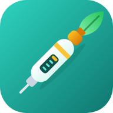

Política de Privacidade
NutriPen: Diário da Caneta · aplicativo Android br.com.nutripen.app
Última atualização: 26 de novembro de 2026 (v1.1 — lembrete da aplicação)
1. Quais dados o aplicativo usa
Para funcionar, o NutriPen guarda no próprio aparelho as informações que você digita: nome ou apelido, idade, sexo biológico, altura, peso e medidas corporais, medicação e dose, locais de aplicação, refeições, glicemias, evacuações, sintomas e condições clínicas marcadas por você.
Muitas dessas informações são dados pessoais sensíveis de saúde (art. 5º, II, da LGPD). Elas são tratadas somente no seu dispositivo, para calcular metas e gerar os resumos que você vê na tela.
2. O que não acontece
- Nenhum dado é enviado ao desenvolvedor ou a servidores de terceiros.
- Não usamos ferramentas de análise, publicidade, identificador de anúncios ou rastreamento.
- Não há criação de conta. O desenvolvedor não tem como ver, acessar ou recuperar seus registros.
- O aplicativo não tem acesso à internet e não solicita câmera, localização ou contatos. A única permissão possível é a de notificações, pedida apenas se você ativar o lembrete da aplicação — os lembretes são agendados no próprio celular.
3. Quando os dados saem do celular
Somente quando você decide, ao tocar em:
- Compartilhar relatório — o texto vai para o aplicativo que você escolher (WhatsApp, e-mail etc.);
- Salvar backup — um arquivo é entregue ao destino que você escolher (Google Drive, e-mail etc.).
A partir daí, aplicam-se as políticas do serviço escolhido por você.
Se o backup automático do Android estiver ativado nas configurações do seu aparelho, o próprio sistema pode incluir os dados do app no backup da sua conta Google. Esse recurso é controlado por você e pelo Google; o desenvolvedor não tem acesso a ele.
4. Seus direitos e como apagar os dados
Como os dados ficam apenas com você, você pode exercer diretamente os direitos previstos na LGPD (art. 18):
- Consultar e corrigir: nas telas do próprio aplicativo;
- Exportar: menu ⋮ → "Salvar backup";
- Apagar: menu ⋮ → "Zerar e iniciar meu perfil", ou desinstalar o aplicativo, ou em Configurações do Android → Apps → NutriPen → Armazenamento → Limpar dados.
5. Uso em saúde
O NutriPen é uma ferramenta de apoio à organização pessoal. Ele não é um dispositivo médico, não faz diagnóstico e não substitui a orientação de médico ou nutricionista. Doses de medicamentos só devem ser alteradas pelo médico. Em emergência, ligue 192.
6. Público
O aplicativo é destinado a maiores de 18 anos.
7. Alterações
Se esta política mudar, a nova versão será publicada nesta mesma página, com a data atualizada. Se uma versão futura passar a tratar dados de outra forma (por exemplo, com sincronização na nuvem), isso será informado no aplicativo antes de qualquer coleta.
8. Contato
Dúvidas sobre privacidade: pelo e-mail de suporte exibido na página do NutriPen na Google Play.